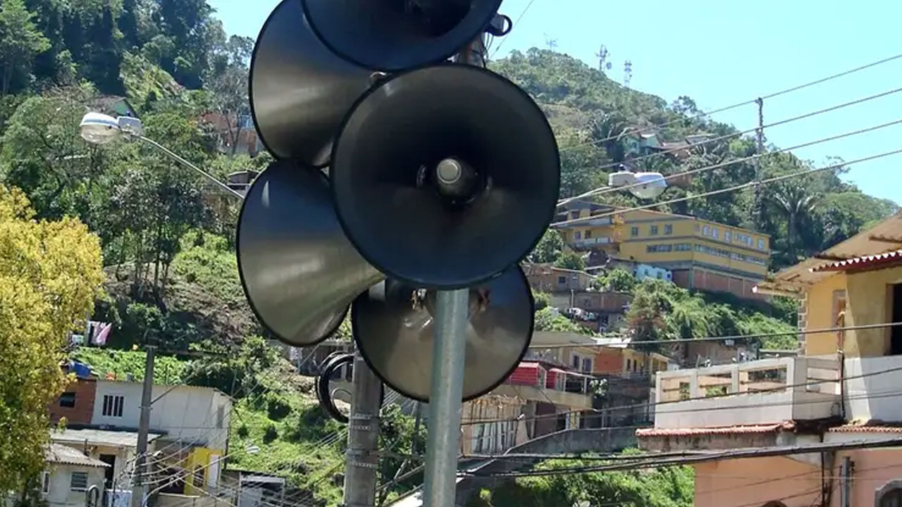
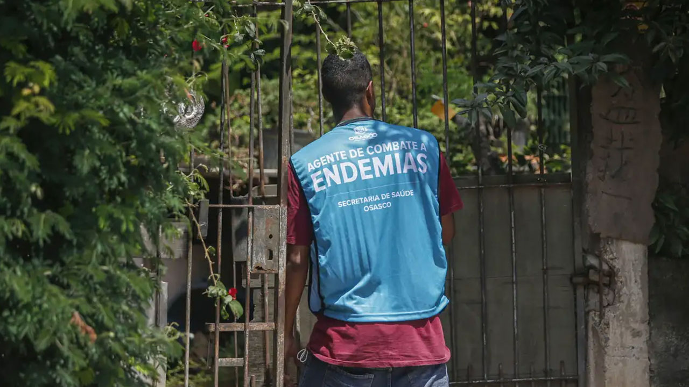
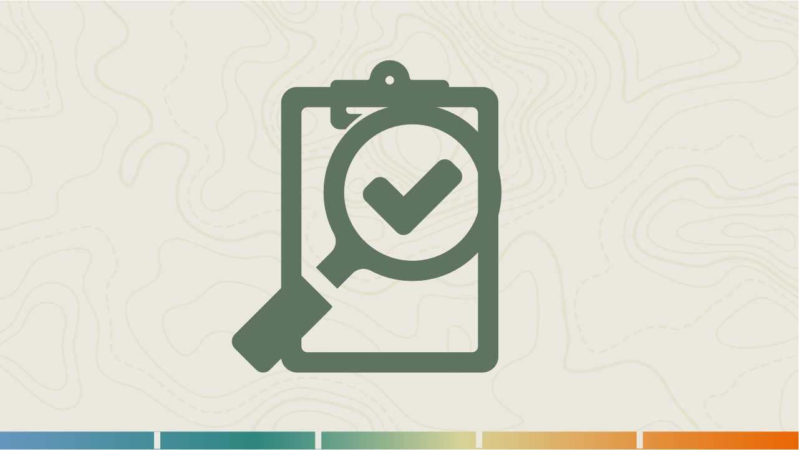
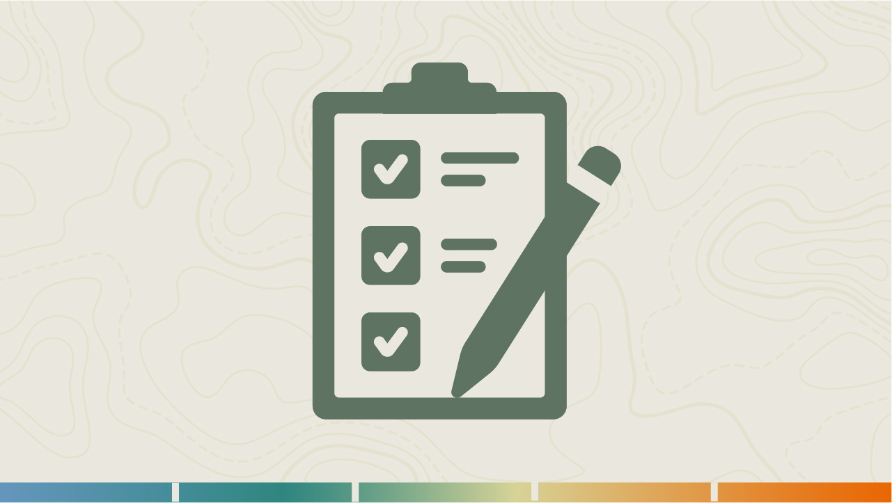
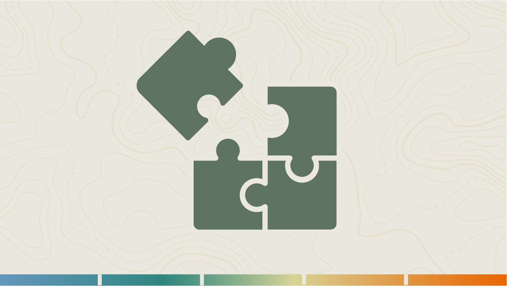

Atuação da APS diante de desastres intensivos nas etapas da GRDE em saúde
Seja bem-vindo(a) à terceira e última aula do módulo II.
Nesta aula, vamos conversar sobre a atuação da Atenção Primária à Saúde (APS) nas fases de prevenção, preparação, resposta e recuperação diante dos desastres intensivos, articulando ações de vigilância, cuidado integral e intersetorialidade.
Ao final da aula, esperamos que você esteja apto(a) para:
- Reconhecer as ações prioritárias da APS nas etapas de prevenção, preparação, resposta e recuperação de desastres intensivos;
- Aplicar estratégias de mobilização comunitária e articulação intersetorial voltadas à redução de riscos e mitigação de danos; e
- Avaliar a importância da integração entre APS, Vigilância em Saúde e outros setores em emergências.
O papel estratégico da APS na gestão de riscos de desastres em saúde
A gestão do risco de desastres não é responsabilidade exclusiva de órgãos de proteção civil ou dos serviços de urgências, pois envolve o conjunto do sistema de saúde e, em particular, a Atenção Primária à Saúde.
De que forma o conhecimento do território pode ajudar a APS a reduzir os impactos dos desastres na saúde das comunidades?
Nos desastres intensivos – inundações bruscas, enxurradas e deslizamentos – a APS desempenha papel estratégico ao longo de todo o ciclo de gestão.
Ouça a seguir o relato de um profissional da Vigilância em Saúde Ambiental, em que ele aborda o tema das chuvas intensas, destacando seus impactos sobre a população e os serviços de saúde.
“Bem, aqui na minha região, o principal desastre são os hidrológicos, a questão das enchentes, período de chuva e aumento do nível do rio, causando enchentes, inundações. E pela topografia da cidade, nós temos muitas encostas altas que sofrem também deslizamento de terra quando tem esses períodos chuvosos.
Então são esses os principais desastres que nós enfrentamos aqui na região.
Podemos fazer uma ressalva para 2021, que teve um desastre de grande magnitude, que foi a grande enchente que tivemos, e tivemos um número de desabrigados muito superior ao normal.
E nós enfrentamos dificuldades até para encontrar locais para abrigar essas pessoas. Dificuldades em trabalhar em conjunto, porque existe, infelizmente, uma desarticulação dos setores. Então, infelizmente, a dificuldade maior nossa foi justamente trabalhar em conjunto com os outros setores.”
Prevenção e preparação
Na fase de prevenção e preparação, a APS ocupa posição estratégica por estar mais próxima da comunidade e conhecer profundamente o território. Essa proximidade permite mapear áreas vulneráveis, identificar populações em risco e desenvolver ações educativas que reduzam a exposição a enchentes, enxurradas e deslizamentos.
Além disso, a análise de risco, que relaciona ameaça, exposição, vulnerabilidade e capacidade de resposta, orienta a priorização das intervenções e o planejamento das medidas antes que o desastre aconteça.

Como sentinela do território, a APS articula-se com a Vigilância em Saúde, a Defesa Civil e outros setores para fortalecer a resiliência das comunidades. Contribui para a implantação de sistemas de alerta precoce, organiza a logística e prepara estoques de insumos e medicamentos, garantindo a continuidade do cuidado em situações de crise.
Entre suas principais atribuições estão:
- Mapear áreas de risco e grupos vulneráveis, em conjunto com agentes comunitários de saúde e agentes de combate a endemias.
- Promover educação em saúde sobre ações necessárias em caso de enchentes, enxurradas e deslizamentos, como uso seguro da água, armazenamento de alimentos e higiene.
- Estabelecer protocolos de vigilância epidemiológica e ambiental para monitorar sinais de surtos de doenças sensíveis à água, saneamento e clima.
- Participar da elaboração e atualização de planos de contingência, incluindo rotas de acesso e estoques de medicamentos, vacinas e hipoclorito de sódio.
- Integrar-se aos sistemas de alerta precoce, compartilhando informações com Defesa Civil e meteorologia.
A título de exemplo, assista a seguir ao vídeo Gestão de medicamentos: cuidados necessários em desastres. Nele, as farmacêuticas Elaine Miranda e Claudia Osorio abordam a importância da gestão adequada de medicamentos em situações de desastres, destacando a necessidade de planejamento, controle de estoque, distribuição segura e uso racional para garantir a continuidade da assistência à população afetada.
Em 2025, o Ministério da Saúde lançou uma plataforma que integra dados de saúde, clima e território para fortalecer a resposta do SUS às mudanças climáticas. Acesse a plataforma.
Resposta
Durante a resposta aos eventos, a capilaridade da Atenção Primária à Saúde favorece a detecção precoce de agravos e a realização da triagem de vítimas. Sua presença no território permite identificar rapidamente novas demandas e organizar o cuidado de forma ágil.
Nesse contexto, a integração entre APS, Vigilância em Saúde, redes de urgência e atenção psicossocial, além dos Centros de Operações de Emergência em Saúde (COEs), assegura um fluxo coordenado de informações e recursos, garantindo acolhimento, encaminhamento adequado e monitoramento de doenças transmissíveis e agravos traumáticos.
Vale destacar a fundamental importância da participação da APS na estrutura dos COEs, cujo principal objetivo é promover a resposta coordenada por meio da articulação e da integração dos atores envolvidos. Essa participação pode resultar em maior integração e tomada de decisão conjunta no enfrentamento às emergências.
A atuação dos agentes comunitários de saúde e dos agentes de combate a endemias fortalece a comunicação com a população, facilita a disseminação de medidas de higiene e prevenção e amplia a capacidade de resposta local.

Durante o desastre, a APS mantém seu papel como porta de entrada preferencial e coordenadora do cuidado: realiza triagem de feridos, identifica e encaminha casos graves, monitora doenças infecciosas e oferece orientação e apoio psicossocial.
O trabalho em rede possibilita respostas articuladas e sustenta a atenção integral, mesmo em cenários de sobrecarga.
Entre as principais atribuições da APS na fase de resposta, destacam-se:
- Montar pontos de acolhimento para triagem e primeira avaliação de feridos e doentes.
- Monitorar e notificar casos de diarreia, leptospirose, arboviroses e outras doenças que possam surgir após desastres intensivos.
- Atentar para o agravamento de quadros de cardiopatias, diabetes, neoplasias e outras doenças não transmissíveis.
- Garantir continuidade de tratamento de doenças crônicas (hemodiálise, insulinoterapia, antirretrovirais) e assistência a gestantes, crianças, adolescentes e pessoas idosas.
- Coordenar ações de apoio psicossocial, organizando grupos de acolhimento e encaminhando casos graves à Rede de Atenção Psicossocial.
O Ministério da Saúde publicou material com diretrizes para a atuação de profissionais da APS em situações de inundações, com foco em abrigos temporários. Serve para orientar as equipes da APS na organização do cuidado nesses locais durante situações de inundações e desastres. Apresenta recomendações práticas para acolhimento, busca ativa, identificação de riscos, Vigilância em Saúde e atendimento de populações vulneráveis em contextos de emergência. Também auxilia na articulação das redes de cuidado e na estruturação das ações de resposta, proteção e acompanhamento da população afetada. Acesse o material do Ministério da Saúde.
Para aprofundar, assista a seguir ao vídeo Desastres: o papel da Rede de Atenção Psicossocial com a professora e pesquisadora Milena Leal, que apresenta a importância da Rede de Atenção Psicossocial (RAPS) na organização do cuidado em saúde mental para pessoas afetadas por desastres.
Recuperação
Na fase de recuperação, a Atenção Primária à Saúde mantém-se como referência para a reabilitação física e mental das pessoas afetadas. Nesse período, acompanha pessoas com doenças crônicas, oferece suporte psicossocial e reforça a vigilância diante de possíveis surtos ou complicações que podem surgir a médio e longo prazo. Além do cuidado direto, de acordo com os processos de monitoramento e avaliação da gestão de risco, essa etapa envolve:



Ao longo de todo o ciclo do desastre, a APS consolida-se como elo entre a comunidade e o sistema de saúde, assegurando cuidado integral e contínuo. Sua articulação com a Vigilância em Saúde, as redes de urgência e atenção psicossocial e os Centros de Operações de Emergência em Saúde (COEs) fortalece o trabalho em rede e contribui para respostas mais qualificadas, mesmo diante de cenários de sobrecarga.
Entre as atribuições da APS na recuperação estão:
- Acompanhar a reabilitação de pessoas com lesões e doenças crônicas, oferecendo visitas domiciliares e consultas regulares.
- Contribuir com a vigilância epidemiológica de doenças infecciosas e agravos de saúde mental, com foco em populações em situação de vulnerabilidade e em trabalhadores que participaram da resposta, incluindo profissionais de saúde.
- Participar da reconstrução das unidades de saúde em locais seguros, incorporando soluções de água, saneamento e energia sustentável.
- Realizar rodas de conversa e atividades educativas sobre lições aprendidas, fortalecendo a cultura de prevenção no território.
- Atualizar o mapeamento de risco e os planos de contingência com base nas experiências vividas e nos eventos climáticos esperados.
Nesta aula, refletimos sobre o papel indispensável da Atenção Primária à Saúde na gestão de risco de desastres intensivos. Partindo da premissa de que a APS é a porta de entrada preferencial para o SUS e o elo mais próximo da comunidade, vimos que sua atuação deve abranger todas as fases do ciclo: prevenção e preparação, resposta e recuperação.
Essa atuação exige compreensão da análise de risco, considerando ameaças, exposição, vulnerabilidade e capacidade de resposta, e integração intersetorial, envolvendo Defesa Civil, vigilância ambiental, assistência social e participação comunitária. Exige também atenção quanto às vulnerabilidades sociais, promovendo justiça climática ao priorizar grupos de maior risco, como idosos, mulheres, crianças, populações de baixa renda, em situação de rua, com deficiência e com doenças crônicas, comunidades rurais, indígenas e tradicionais (ribeirinhas, quilombolas etc.), dentre outros.
A Nota Técnica n. 19/2024 do Ministério da Saúde apresenta orientações para garantir acesso, acolhimento e cuidado de populações em situação de vulnerabilidade durante emergências climáticas e desastres.
A Nota Técnica n. 19/2024 do Ministério da Saúde enfatiza a atuação da APS na busca ativa, atualização cadastral, promoção da equidade e cuidado em saúde mental nos territórios afetados. Também destaca estratégias intersetoriais para fortalecimento do SUS e redução das vulnerabilidades em contextos de enchentes e calamidades públicas. Acesse a Nota Técnica.
Para a Atenção Primária à Saúde, mais do que conhecer protocolos, é fundamental desenvolver uma postura proativa, que valorize o diálogo com a comunidade, a intersetorialidade e a aprendizagem contínua. Assim, a APS se fortalece como eixo estruturante do cuidado à saúde no SUS frente à emergência climática, protegendo vidas e promovendo saúde mesmo diante das adversidades.
O quadro a seguir sintetiza como a APS pode atuar como elo entre a comunidade e a rede de saúde durante todo o ciclo do desastre, identificando riscos, protegendo grupos em situação de vulnerabilidade, articulando respostas intersetoriais e garantindo a continuidade do cuidado diante de inundações bruscas, enxurradas e deslizamentos.
| Quadro-síntese – Atuação da APS diante de inundações bruscas, enxurradas e deslizamentos. | |||
|---|---|---|---|
| Aspecto / Evento | Inundações bruscas | Enxurradas | Deslizamentos |
| Sinais de alerta para atuação no território | Alertas meteorológicos, início de chuvas intensas, elevação rápida do nível de rios e córregos, alagamentos extensos, interrupção do abastecimento de água, deslocamento de famílias e necessidade de abrigos temporários. | Alertas meteorológicos, início de chuvas intensas com escoamento superficial veloz, arraste de pessoas, veículos e resíduos, isolamento de áreas e danos à infraestrutura urbana. | Alertas meteorológicos e início de chuvas intensas. Rachaduras em terrenos e edificações, inclinação de árvores, postes ou muros, movimentação de encostas, queda de barreiras e chuvas persistentes em áreas suscetíveis. |
| Ações prioritárias da APS | Orientar sobre uso seguro da água, higiene e armazenamento de alimentos; monitorar doenças relacionadas à água contaminada; apoiar ações em abrigos temporários; garantir continuidade do cuidado de pessoas com doenças crônicas, gestantes, crianças, idosos e pessoas com deficiência. | Realizar acolhimento e triagem de vítimas; monitorar agravos traumáticos e doenças relacionadas ao desastre; organizar encaminhamentos para a rede de urgência; identificar e acompanhar pessoas mais vulneráveis afetadas pelo evento. | Apoiar evacuações preventivas; identificar pessoas afetadas e famílias desalojadas; monitorar impactos físicos e psicossociais; garantir acesso ao cuidado de grupos vulneráveis e atenção em saúde mental. |
| Principais grupos e condições de risco | Pessoas expostas à água contaminada, moradores de áreas alagáveis, crianças, idosos, gestantes, pessoas com doenças crônicas, pessoas com deficiência, população vivendo em abrigos temporários, pessoas em situação de rua, indígenas, quilombolas, ribeirinhos e comunidades rurais remotas. | Pessoas feridas ou isoladas, moradores de áreas sujeitas a enxurradas recorrentes, trabalhadores envolvidos na resposta ao desastre, crianças, idosos, pessoas com mobilidade reduzida, pessoas em situação de rua, indígenas, quilombolas, ribeirinhos e comunidades rurais remotas. | Moradores de encostas e áreas de ocupação precária, famílias desalojadas ou desabrigadas, pessoas com sofrimento psíquico decorrente das perdas, idosos, crianças, gestantes e pessoas com deficiência. |
| Articulação territorial e comunicação | Integrar ações com Vigilância em Saúde, Defesa Civil, Assistência Social e gestores de abrigos; divulgar alertas e orientações sanitárias; realizar busca ativa de grupos prioritários. | Manter comunicação permanente com Defesa Civil, serviços de urgência, hospitais, lideranças comunitárias e equipes da APS para identificação rápida de necessidades e encaminhamentos. | Articular-se com Defesa Civil, Assistência Social, lideranças comunitárias e demais setores para monitoramento de áreas de risco, evacuação preventiva e proteção das populações expostas. |
| Objetivo da atuação da APS | Reduzir riscos de surtos, agravos e interrupções do cuidado, protegendo especialmente as populações mais vulneráveis. | Minimizar danos à saúde, garantir resposta rápida e coordenada e assegurar o acesso oportuno aos serviços de saúde. | Proteger vidas, reduzir impactos físicos e psicossociais, apoiar a recuperação das comunidades afetadas e fortalecer a resiliência territorial. |
Você faz parte de uma equipe da Atenção Primária Prisional (eAPP)? Ou conhece alguma em seu território? O Ministério da Saúde publicou material específico que apresenta diretrizes para apoiar a eAPP na organização do cuidado em saúde durante situações de inundações e desastres. Essa publicação orienta ações de vigilância, prevenção, acolhimento, assistência e articulação em rede, considerando as especificidades e vulnerabilidades do sistema prisional. Além disso, fortalece o papel da APS na garantia da integralidade do cuidado e na continuidade da assistência às pessoas privadas de liberdade em contextos de emergência em saúde pública. Acesse a publicação do Ministério da Saúde.